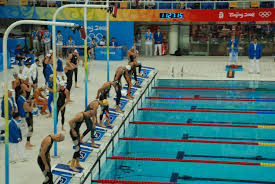

football is a game that is lets say a game that everyone likes football needs a lot of learning and with becoming proffecional footballer u can achive trophies and stuff for Your country

Basket ball i like football but the amount of space is reduced and instead of having to kick the ball with ur legs and having a goal keeper theres lets say a bag or something u have to throw a ball in with ur hands and the whole time u have the ball u have too keep bouncing it
Swimming is more like a speed based game like the first person to get to the end will be number one and the second will be number 2 and it continues with how many people there are and swimming is a lot harder because you have to learn it properly and if u wont u cant drown plus you have to hold ur breath the whole time